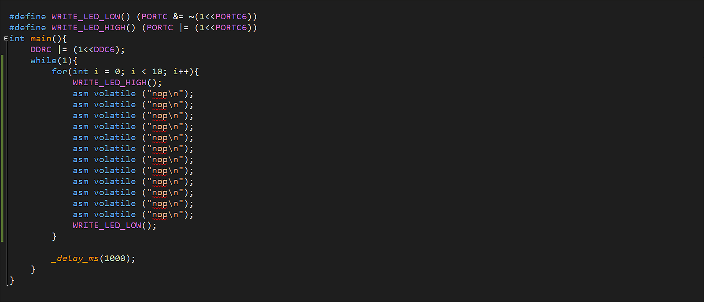
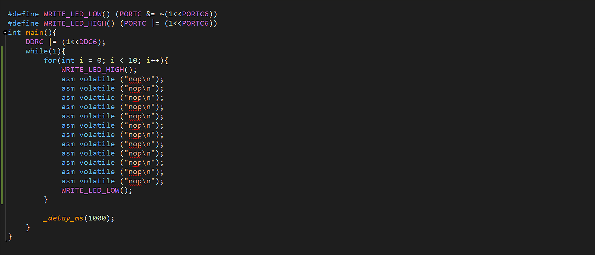
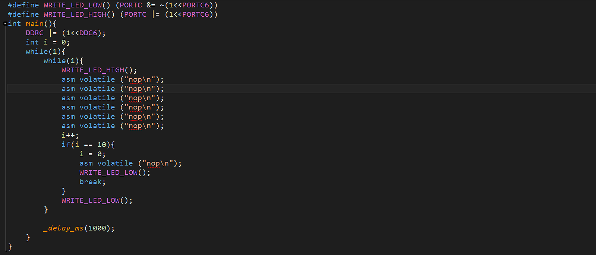
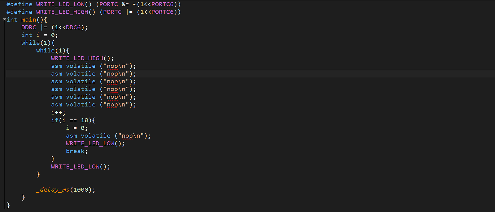
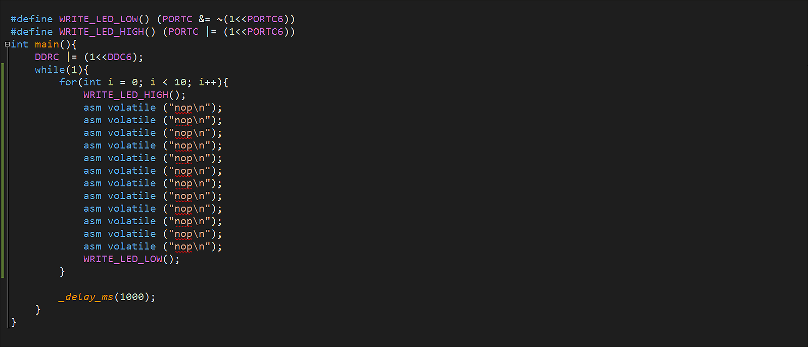
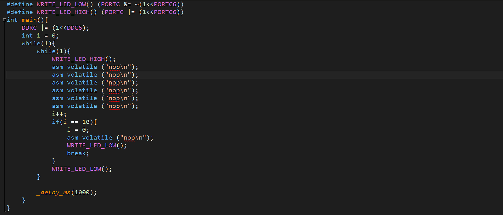

 

I for one, have faith in my thumbs; more faith than modern keyboard designs do, it seems. While I was typing away one day, I looked down at my fingers hammering away, each one with a job, each one contributing to the task at hand. Sure some fingers had more important rolls than others, but everyone was getting involved. Except for my right thumb. My right thumb just sat there, poised over the keyboard ready to participate, but never called to action. I thought to myself -- "one extra wide key for two digits? It can't be optmimal. -- so I set out to see for myself. The only question was, what keys should fill the new spaces? As someone who spends most of their time writing in languages that use the "[]{}=+-_" set of keys all of the time, they seemed like the obvious choice. While I was at it, I had one more optimization I wanted to implement. I am a big fan of VIM. I am certainly not an expert. However, the tricks that I have picked up, are hard to live without. I find myself typing "kkkkjjjlll" all of the time in text documents and emails. Since I was planning on making a minimal footprint, multilayered keyboard, I decided to replace the "hjkl" keys with the arrow keys on the second layer.
This keyboard is based on PISO shift registers. So first we need to put our shift registers in parallel load mode and then serially shift in that data for proccessing. Given the speed of the 32u4 chip we are using, and clock speed of 16mhz, we do not have to worry about waiting for the shift registers to load in the data. The maximum transition period for the shift register is 45 ns, and the best case senerio for the 32u4 is 62.5 ns per operation. Each of the three registers have their control lines tied together so that they can be controlled in lock step by only manipulating a single line. If change is detected, the appripriate key is added to the HID report and the LED animation is triggered. If, however, the key is a layer shift key, nothing is sent to the host and instead the internal key mapping is adjusted appropriately. Also, the LED background color is changed so that the user knows that a layer change has happened.
The 32u4 is just barely fast enough to keep up with the timing requirments of the LEDs used in this project. The datasheet states the timing
for a 0 code is 300ns high, 900ns low, with an allowance of (+-) 80ns. With a single operation taking 62.5 ns, the processor only has time to excecute
4.8 instructions between setting the LED pin high, and pulling it low. This of course eleminates the possibility of using timers.


For this project, I only had a few key physical requirments in mind. The key layout needed to be orhtolinear, I wanted backlighting, and I wanted the smallest footprint I could manage. The first two requirments were relatively straight forwared, in regards to the design process. However, reducing the footprint proved to be a challenge. Since I wanted to have backlit keys, and a good clicky feel, I found myself needing to use through-hole keys. Which was great, except it removed the possibility of adding larger components to the back of the board. I could have made the board taller, or wider, but this would have violated one of my primary design requirments. So, I desided to do something I had never seen before and implemented what I called the bi-plane design. I could have used a ribbon cable to connect to two boards, but again this added more width and height. I was unsure if the bi-plane would introduce any significant electrical issue, or assembly issues, but decided to give it a shot. While it did increase the assembly complexity, it went much smoother than I was expecting.


Another oddity in the design is the implementation of an entire pre-assembled development board onto the PCB. The motivation behind this decision was wanting to minimize hardware debugging at all costs. I don't have enough experince on the hardware side of things to be confident that novel power circuitry or timing circuity, of my design, would have worked first try. Giving up 2mm to the thickness of the development board's pcb, to save potentially months of time, seemed like the obvious choice.
In order to make a good connection between the GPIO of the development board and the PCB pads, pins were used. These pins served two purposes. Firstly, they allowed solder to get all the way down into the GPIO pins and create a solid connection with the PCB traces. Secondly they facilitated future access to the MCU for debugging and updates.
Integrating the development board was relatively easy. A small blob of solder was added to the end of each pin before being placed through the GPIO and held in contact with the PCB traces. Then the pin was heated and more solder was added, ensuring a secure connection to both boards. Attempts to solder without the pins were unsuccesful. The surface tension was too high and the top of the GPIO holes were just covered with cap of solder, with none reaching the PCB traces. Regardless, we needed access to the ISP pins anyways, so adding this pins to all of the connection points and trimming the ones that we didn't need access to was not very much extra work.


The assembly proccess for most of the components was relatively straight forward in regards to the top board. The most novel aspects of the assembly proccess were in regards to the bi-plane design and the integration of the development board. First, long strands of wire were soldered to the top board like hair follicles. Then these long wires were threaded into the bottom board one row at a time. The board is the slowly lowered, while making sure everything is kept straight.


If I were to do this project again, there are a few major changes I would make. I would still use surface mount components because working with them was a goal of this project. However, I would NOT have used such small ones. I suppose using these tiny components helped me learn a lot, however they were a pain in the butt. Here is a picture of one of the resistors next to some Mortons table salt.

I also had to use a usb microscope in order to visually inspect connections.

Another major change I would have made is in regard to the IO pins used to read the shift register values. Instead of using IO pins that are physically next to each other on the development board, I would have used IO pins that were adjacent in a single port. This would have allowed me to use a bit mask to read all of the pin values at once instead of reading each individually and then packing them into and array.
Finally, I would have moved the development board onto the other side of board 2. This would have allowed for easier access to the pins in case of repairs, debugging, and updates.